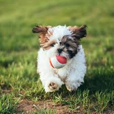
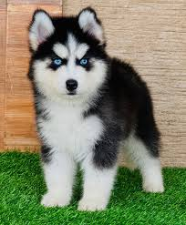
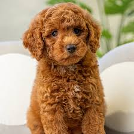

Golden Retrivers
One of the most common and well known breeds are the Golden Retrievers.They can be golden (obviously) and a whitish color. The image I have provided is a image of a puppy.When Goldens grow up they are pretty big.They are lovable,hilarious,and a bundle of love.Although they are adorable and fun,a caution is that goldens shed a LOT.So if you want a Golden Retriever personality but non shedding then a goldendoodle or goldichon would be best.If you live in an apartment it may be best not to get one but you can try.

Shih Tzu
Want a tiny body but huge personality, or should I say pup-sonality? Shih Tzus are a good dog breed if you want a lap dog with a feisty but loving way.They are also adorable and Shih tzus can come in any color paired with white that dogs can be. They are adorable and most Shih Tzus don't shed a lot.If you are still not sure if you get a Shih Tzu and it sheds get a Shihpoo or a ShiChon If you live in an apartment then Shih Tzus are actually great for apartments. They are tiny, don't take up too much space and everyone will love your dog.

Husky
This dog loves snow and is a drama queen.If you guessed Husky, you are correct.Huskies are adorable winter dogs that are totally dramatic. But who can't look at a Husky and think, "This dog is for me".I mean look at how cute they are. They can come in black and white,which is their most iconic color, and much more.Altough there are good dogs living in apartments, keeping a Husky might not be the best idea.They shed a lot,they howl a lot,and they take up a lot of space.Even if you get a Huskydoodle (A Husky and Bichon Frise mix is very rare so I did not include it) they still have that loud Husky blood with them. But other than that they are amazing.
Pomeranian
The dog that we see on clips getting cute hairdos and is very adorable. It's the Pomeranian! The cutest, fluffiest, and cuddliest dog ever.They can come up to 20 different colors.They are also really good for apartments since they are small.Everyone will think your dog is not real since it's so cute. But these cuties do shed sadly. But like any other breed you can get a Pomapoo.This breed is also like the Shih Tzu that I had metioned .They are both small but feisty, adorable pups(but I mean what dog is not cute) , and great for apartments.

Poodle
The dog that we have been waiting for is finally here.It's the Poodle !They are adorable and smart.They are the breed known to be hypoallergenic. You can get a Poodle in any color dogs can be.Poodles are also great apartment dogs especially the smaller ones.Poodles are also great dogs if you want an energetic dog but still wants to cuddle with you. You can get a Poodle purebred but there are Poodles mixed with other breeds such as a Goldendoodle,Maltipoo,Labradoodle,Cavapoo,and much more variations.

 Big Golden Retriever!
Big Golden Retriever! Its a indie dog!
Its a indie dog!{kind=link}
{kind=link}
{kind=link}
{kind=link}